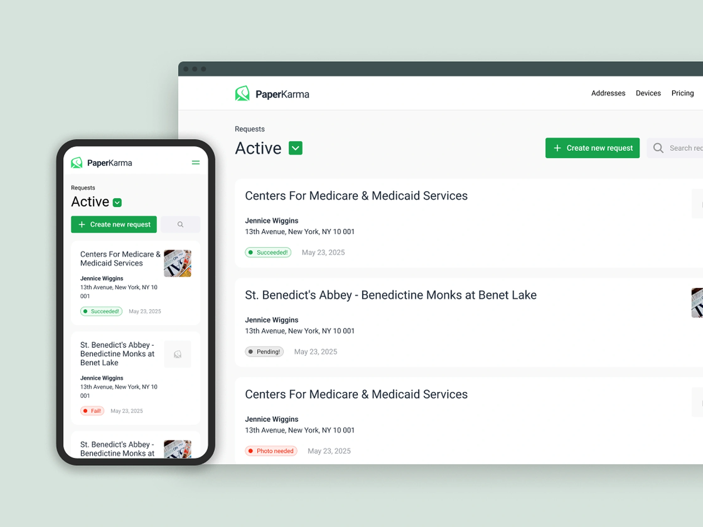
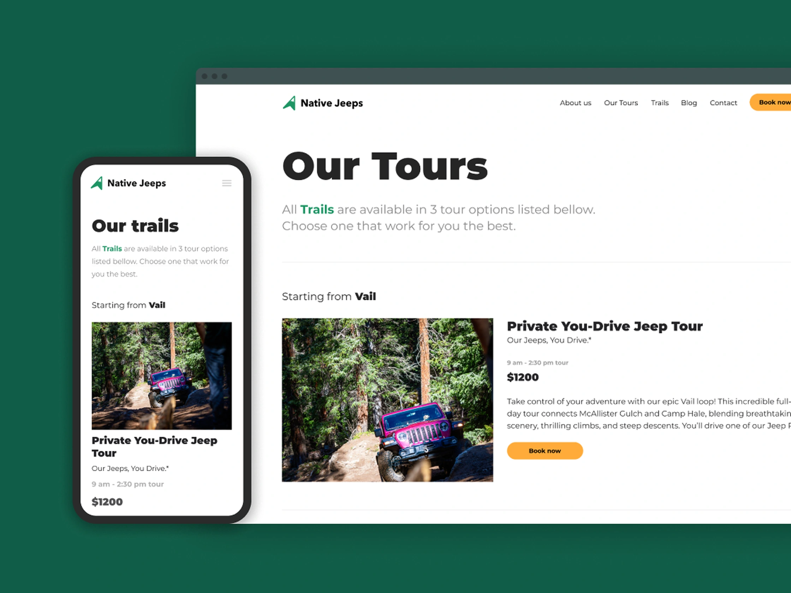

Živim i radim u Zagrebu
UX/UI dizajnerica
Dizajniram jasna i intuitivna web i mobilna iskustva, s fokusom na potrebe korisnika, funkcionalnost i vizualnu dosljednost.
Imam iskustvo u radu na digitalnim proizvodima, uključujući mobilno bankarstvo, gdje složene zahtjeve pretvaram u razumljive korisničke tokove i jednostavna sučelja.
Odabrani radovi



Pogledaj projekt
Pogledaj projektOstali radovi

O meni
UX/UI dizajnerica sam s iskustvom u dizajnu web i mobilnih sučelja, uključujući aplikacije za mobilno bankarstvo.
Složene zahtjeve pretvaram u jasne korisničke tokove, doprinosim dizajn sustavima i surađujem s developerima i dionicima.
Iskustvo
Zagrebačka banka
UX/UI dizajnericaruj 2025. – danasFunkcionalnosti mobilnog bankarstva i poboljšanje korisničkih tokova prema poslovnim zahtjevima, uz UI ekrane i komponente u dva dizajn sustava.
Recent Work
UX/UI dizajnerica, od prakse do stalnog zaposlenjasvi 2024. – kol 2025.Analiza klijentskih web-stranica, dizajnerski koncepti dorađeni prema povratnim informacijama klijenata te korisničko istraživanje i wireframeovi za aplikaciju za trčanje i biciklizam.
North West Agency
UX/UI dizajnerica, praksaožu 2023. – srp 2023.Wireframeovi i prototipovi za aplikaciju za koncerte te rad na redizajnu web trgovine.